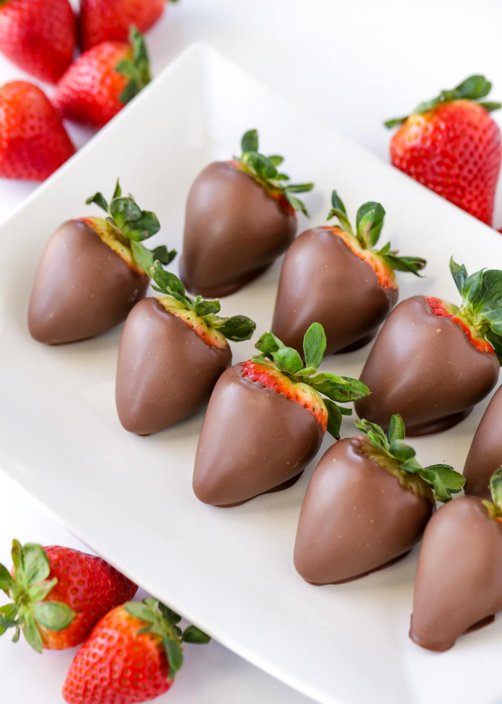
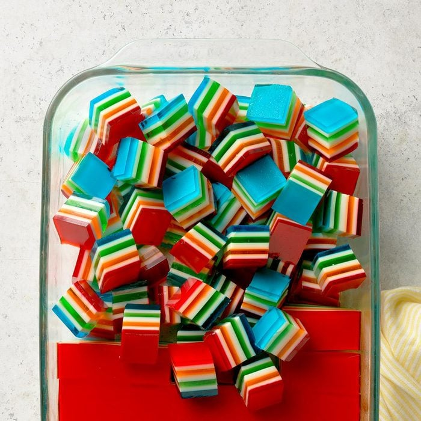
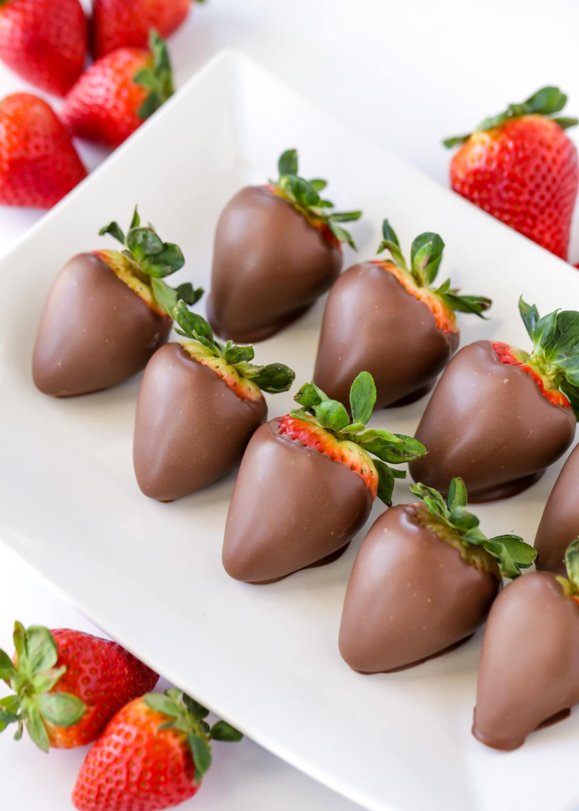
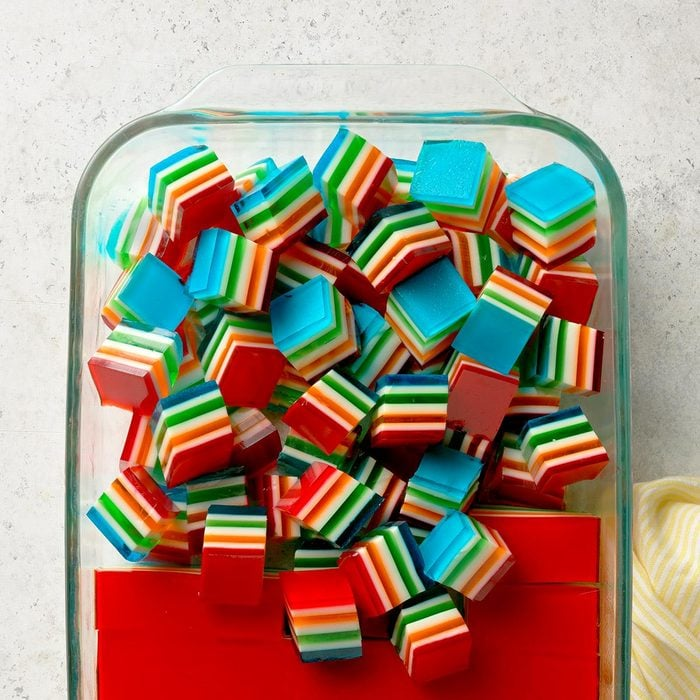

| Bakery Good | Ingredients | Recipe |
|---|---|---|
| Sugar Cookies |
2C flour, 1t baking soda, 0.5t baking powder, 1C butter, 1C sugar, 1 egg, 1t vanilla extract | Preheat oven to 375. Stir in flour, baking soda, baking powder, sugar, eggs, butter, and vanilla in bowl. Roll dough into ball sizes, put on pan, and cook for 8 minutes |
| Chocolate covered strawberries  |
2lbs of Strawberries, 10oz of semi-sweet chocolate. | Melt chocolate in microwave or double boiler. When smooth, dip strawberries and put on baking sheet. Allow to harden and enjoy |
| Chocolate Mousse |
1/4 cup semisweet chocolate chips, 1 tablespoon water, 1 large egg yolk, lightly beaten, 1-1/2 teaspoons vanilla extract, 1/2 cup heavy whipping cream, 1 tablespoon sugar | In small pan, mlet chocolate with water until mooth. Stir in egg yolk, and beat in whipped creaem until thicken. Add sugar until soft peaks, fridgerate and enjoy |
| Rainbow Gelatin Cubes  |
4 packages (3 ounces each) assorted flavored gelatin, divided, 6 envelopes unflavored gelatin, divided, 5-3/4 cups boiling water, divided, 1 can (14 ounces) sweetened condensed milk, 1/4 cup cold water | In bowl, cobine package of geltain and boiling water. Pour into dish and refrigerate for 20 minutes. In another bowl, combine condensed milk and 1C of boiling water, add milk to mixture, and pour into gelatin mixture. Cool and enjoy. |